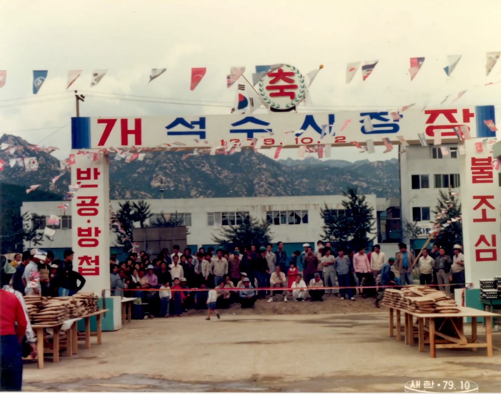
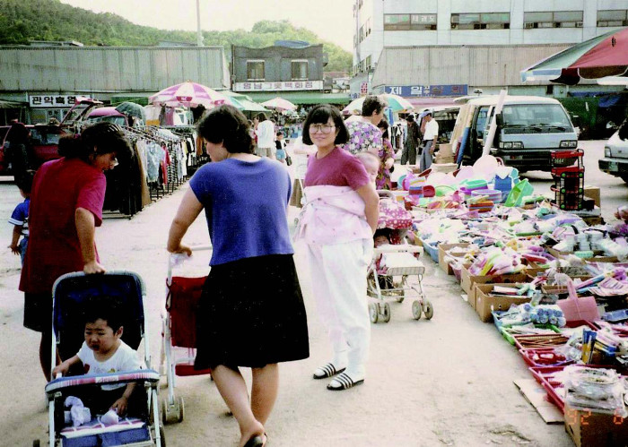
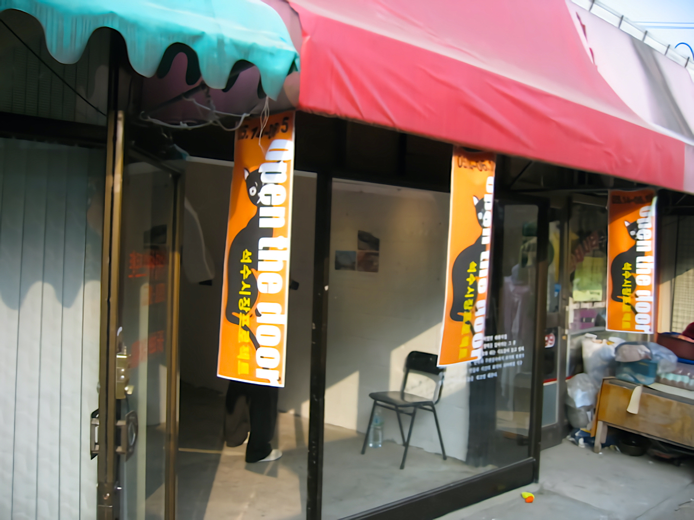
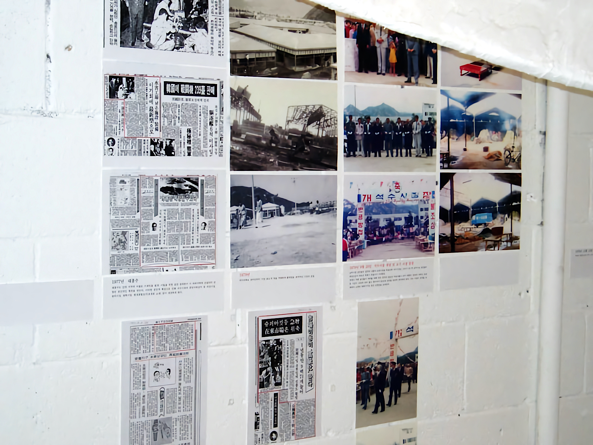
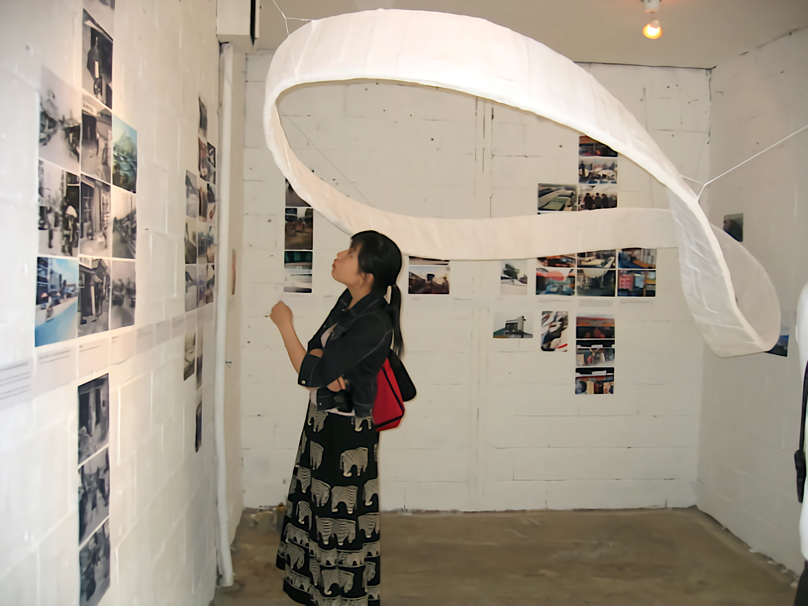
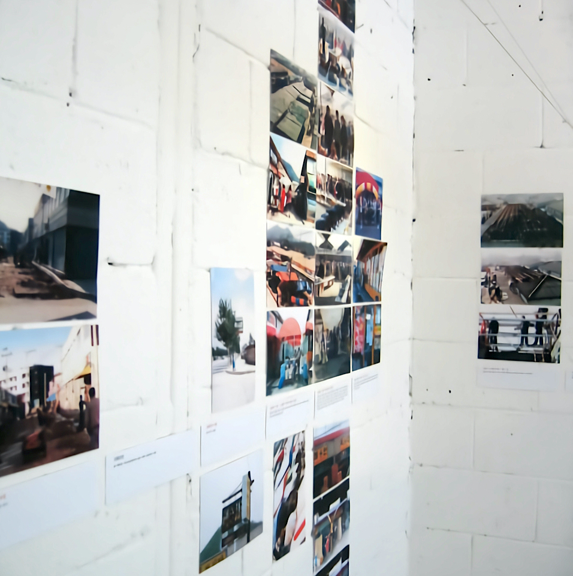
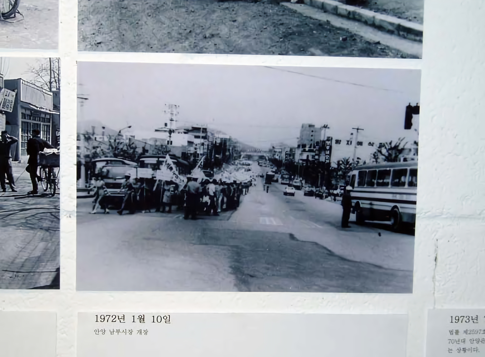
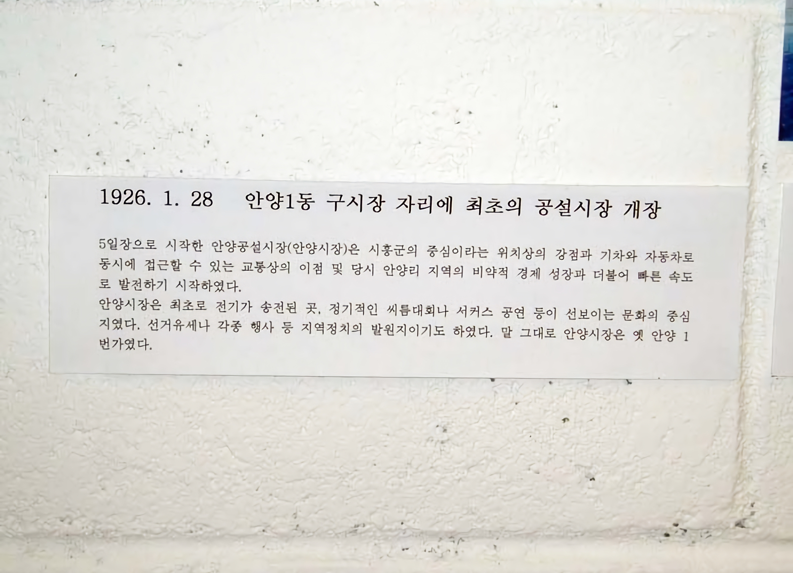
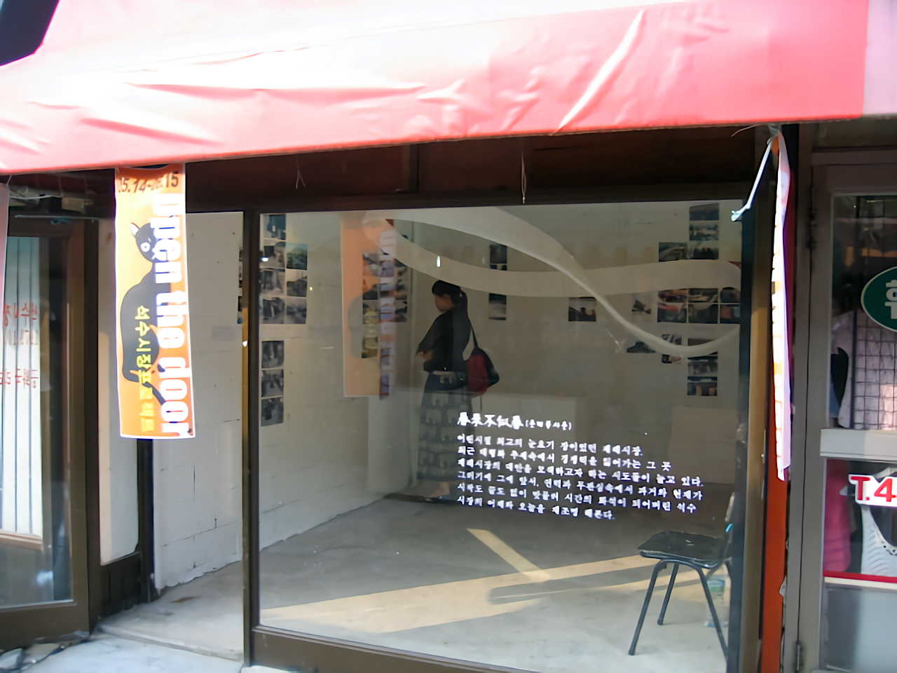

석수시장프로젝트 open the door!
2005.05.14. - 06.15.
석수시장의 역사
석수시장의 빈 점포에 석수시장을 비롯한 안양의 시장에 관한 기록들을 볼 수 있는 역사관이 만들어졌다.


만안구 석수동에 위치한 석수시장은 기존의 재래시장이 아닌 새로운 종합시장형태로 1979년 정부정책에 의해 개장한 야채도매시장이다. 지역의 기대와 달리 석수시장은 개장과 동시에 개점휴업상 태가 이어진다. 당시 안양 남부시장에서 대거 이전을 기대했던 상인들이 이동하지 않았기 때문이다. 결국 전통재래시장과 현대식 마트 어디에도 속하지 않는 기묘한 범주의 시장으로 제대로 기능을 수행하지 못하게 된 것이다. 5년여간의 잠정 휴업 이후 1985년 청과물 도매시장으로 재개점 하였으나, 이번에는 가락동 청과물시장과의 마찰, 압력으로 다시 정체기에 선다. 90년대 이후에는 현대식 대형마트가 곳곳에 개업하면서 시장으로서의 기능이 더욱 축소되었다. 2000년대 초반까지 120여 개의 점포 중 20여 개의 소규모 점포와 중형마트 한 개 정도만 운영되는 실정이었다.
     
석수시장은 IMF의 여파에 맞물려 끝없는 침체의 늪으로 빠져들고 있었다. 멀쩡하던 산업시설들도 유휴공간으로 바뀌는 마당에 희망 없이 유사재래시장이던 석수시장은 지역의 애물단지이자 흉물로 인식되었다. 원도심의 한복판에 자리 잡은, 빈 점포들만 득실거리는 석수시장은 도시의 슬럼화를 부추기고 활력 없는 마을의 풍경을 만들었다. 그도 그럴 것이 석수시장은 (주)석수유통이라는 단일 소유주의 권한에 의해 관리되는 개인사유공간으로 공적인 영역에서의 활성화 문제로부터 제외되어 있었다.

그런데 석수시장의 상권이 좋은 곳이었다면 과연 예술가들에게 열린 문이 있었을까? 하는 생각을 해본다.
春來不似春(춘래불사춘)
어린시절 최고의 눈요기 장이었던 재래시장.
최근 대형화 추세속에서 경쟁력을 잃어가는 그 곳
재래시장의 대안을 모색하고자 하는 시도들이 늘고 있다.
그러기에 그에 앞서, 편견과 무관심속에서 과거와 현재가
시작도 끝도 없이 맞물려 시간의 파석이 되어버린 석수
시장의 어제와 오늘을 재조명 해본다.